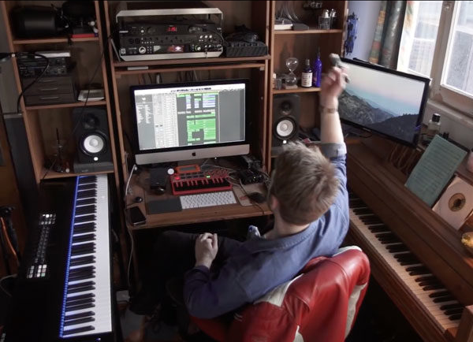

Granular audio passage discovery and acoustic bookmarking for independent music producers over public streaming catalogs.

Sampling is the art of reusing localized 2–8 bar passages (clean drum breaks, isolated Rhodes chords). Yet 250M+ recordings on Spotify and YouTube offer zero sub-track indexing, forcing creators into tedious, manual timeline scrubbing that destroys creative momentum.